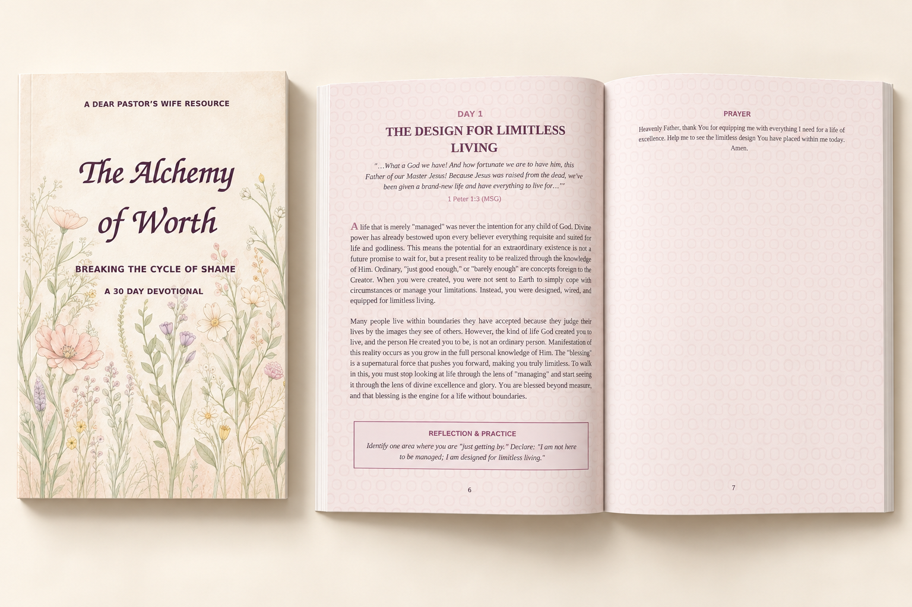

Days 1–10
Foundations of a Limitless Life
Explore identity, freedom and the perfection trap as you consider the life God created you to live.
A Dear Pastor’s Wife devotional · 30 days
Breaking the Cycle of Shame
A journey from shame to significance. Make space to rediscover your worth in God through Scripture, honest reflection and practical daily steps.
For women in ministry, leadership and pastors’ wives.

Inside the devotional
Move through four themes at your own pace, with a daily reading and reflection to help you put what you learn into practice.
Days 1–10
Explore identity, freedom and the perfection trap as you consider the life God created you to live.
Days 11–14
Recognise the inward critic, the mask of shame and the difference between self-consciousness and God-consciousness.
Days 15–20
Reflect on competitive jealousy, relationships and the pressure to base your worth on performance.
Days 21–30
Build a daily practice of truth and gratitude as you learn to walk beyond shame.
Make room for reflection
Take the next step
Contact the DPW team for availability and how to get your copy of The Alchemy of Worth.
Contact the DPW team